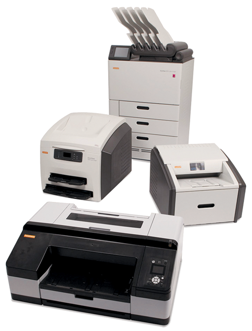

Impresoras Lláser Carestream Dryview en seco 5950/6950/5700

DESCRIPCIÓN:
La línea de impresoras láser en seco más completa de la industria y con excelente calidad de diagnóstico.
CARACTERÍSTICAS:
Tecnología comprobada: Las impresoras láser CARESTREAM DRYVIEW utilizan la tecnología de impresión en seco más avanzada del mercado. En la actualidad más de 20,000 impresoras DRYVIEW están funcionando en todo el mundo.
Calidad de imagen inigualable: Los sistemas DRYVIEW emplean una auténtica tecnología de impresión láser en seco, para ofrecer imágenes de alta resolución y nitidez, tonos continuos y una completa escala de grises. Además, para garantizar esta calidad de imagen en cada película, todas las impresoras DRYVIEW utilizan el patentado sistema de control automático de calidad de imagen (AIQC), que verifica en cada hoja los parámetros de densidad y contraste establecidos por el usuario, y se calibra en forma automática para mantener la consistencia en las imágenes de película a película y de un lote a otro.
Excelente conectividad: Pueden conectarse a cualquier modalidad mediante configuración DICOM o por conexión directa. La configuración del sistema PACS Link proporciona una arquitectura DICOM flexible que se puede ir ampliando hacia soluciones digitales y se adapta perfectamente a sus planes de migración a PACS.
Película fácil de cargar: La película CARESTREAM DRYVIEW es de alta resolución y diseñada con tecnología fototermográfica. Viene en prácticos cartuchos de 125 hojas que se cargan cómodamente en tan sólo 30 segundos.
Las impresoras más vendidas del mundo: Según estudios independientes, las impresoras CARESTREAM DRYVIEW han sido consistentemente merecedoras de un alto índice de satisfacción al cliente y son las impresoras en seco que más se venden en el mundo.
Excelente soporte de servicio: Las impresoras DRYVIEW están respaldadas por un profesional equipo de especialistas altamente calificado.
La impresora láser CARESTREAM DRY VIEW 5700 accesible unidad para colocarse en mesa, imprime imágenes precisas con la misma tecnología láser utilizada en nuestra gama actual de impresoras digitales DRY VIEW.
La impresora DV 5700 produce hasta 45 películas por hora, por lo que es la elección adecuada en calidad, rendimiento y precio.
• Aplicaciones de distribución como la impresión en papel desde estaciones de visualización PACS.
• Modalidades de impresión exclusivas para los sitemas CT, MR, NM y US.
• Radiografía computarizada (CR) y radiología digital (DR).
La impresora Láser CARESTREAM DRYVIEW 5950 ofrece una magnífica calidad para mamografías y radiología en general con la conveniencia de poder ubicarse en una mesa y una excelente confiabilidad.
Es una impresora de mesa para mamografía y radiología general con una resolución nítida de 508 dpi en todos los tamaños de película.
APLICACIONES:
Impresoras láser en seco Carestream
para todas las aplicaciones
|
Modelo |
Descripción |
Tamaño |
Productividad (películas/h) |
|
DryView 5700 |
Diseño compacto. Alta resolución (325 dpi). |
8 × 10” |
45 |
|
DryView 5950 |
Diseño compacto |
8 × 10” |
110 |
|
DryView 6950 |
Tamaño compacto alta resolución (650 dpi) 5 tamaños. Imprime mamografía |
8 × 10” |
125 |
Impresión láser húmeda vs. láser en seco
|
Se evita: |
Ventajas y beneficios: |
|
Químicos |
• Ahorro en los costos/inventario. |
|
Cuarto oscuro |
• No requiere mantenimiento. |
|
Espacio adicional |
• Espacio liberado para otros usos. |
|
El uso de una procesadora |
• Menos costos de mantenimiento. |
|
Tubería especial para agua de drenaje |
• Flexibilidad en la ubicación. |
DATOS COMPLEMENTARIOS: Si desea obtener más información sobre la familia de impresoras láser en seco CARESTREAM DRYVIEW, película o accesorios, favor de contactar al representante CARESTREAM de su localidad o a:
CARESTREAM
Teléfono: (33) 3134-6200
o bien, visítenos en: www.carestream.com.mx